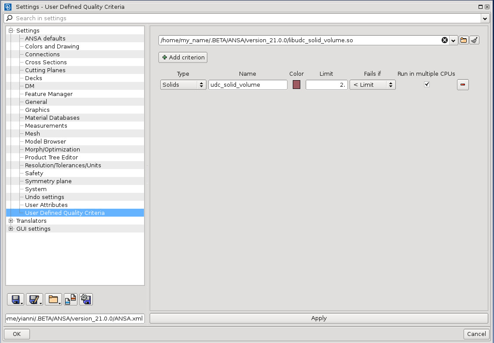
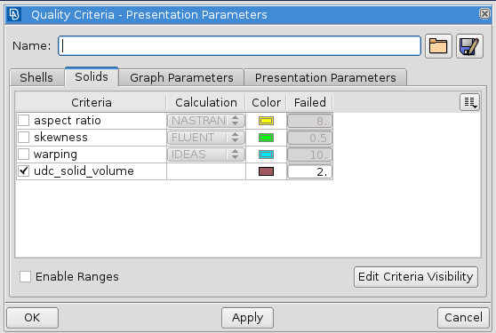
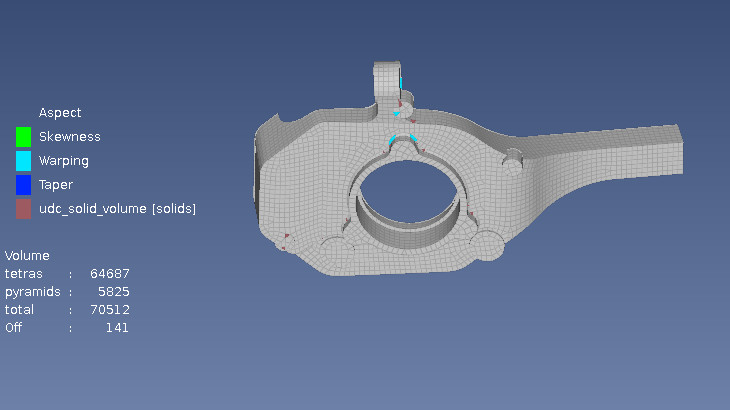
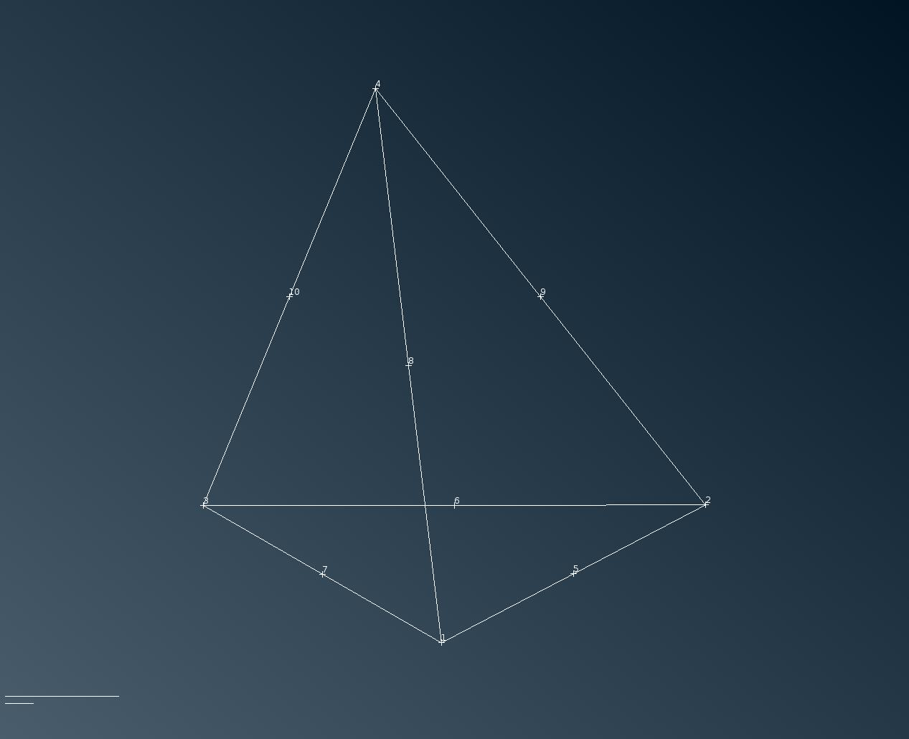
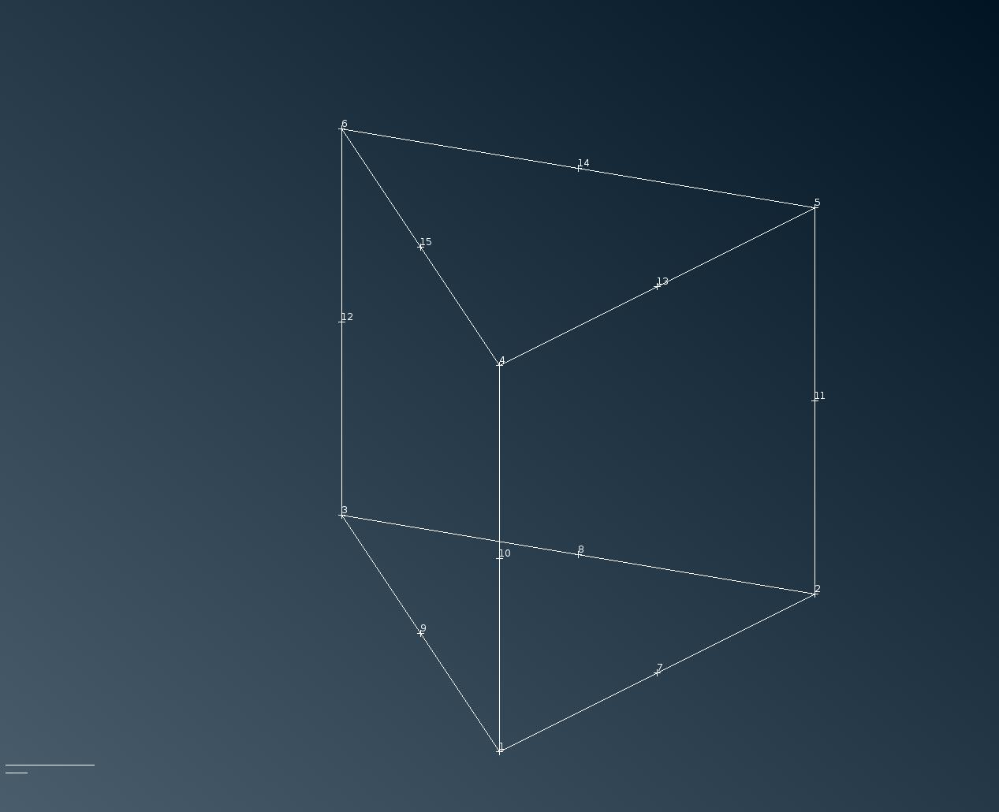
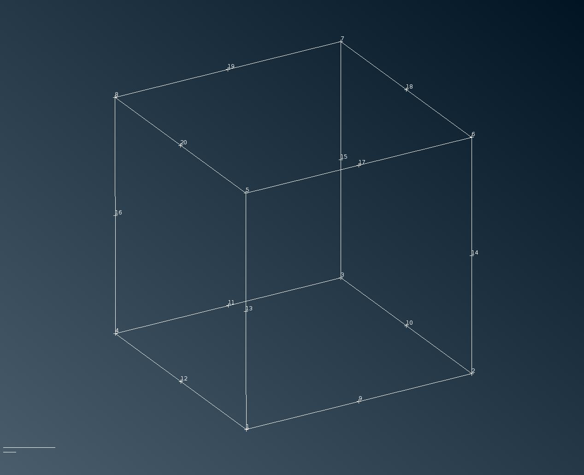
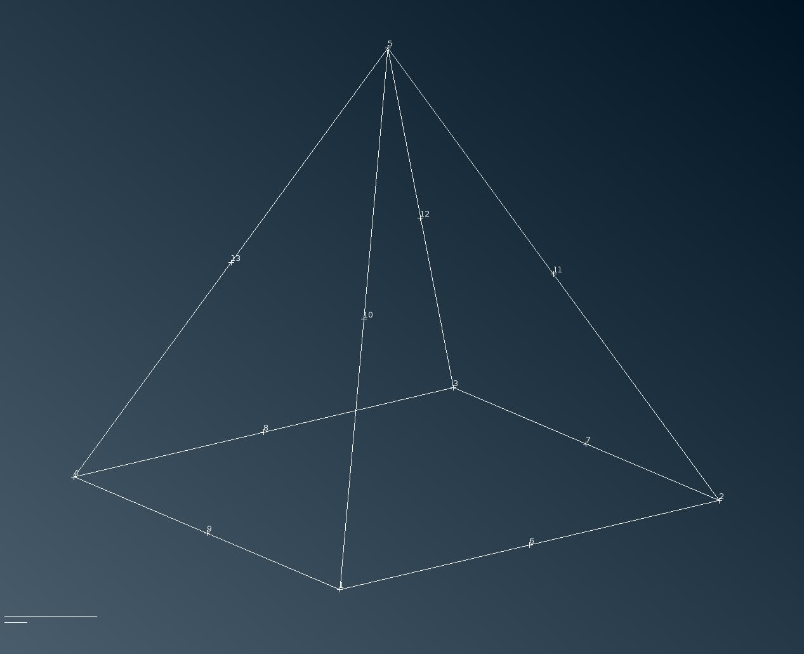

User Defined Quality Criteria#
Users can develop their own quality criteria and integrate them seamlesly with the build in quality criteria. The computation of quality criteria is a very intensive and CPU demanding process and for this a general purpose element computation mechanism is given to user. The provided libraries can be used to develop the required computations. The APIs are in C programming language.
The Software Development Kit#
Location#
The provided SDK is called UDC (User Defined Criteria). It can be downloaded from here udc SDK
Installation#
The package needs to be unzip. The contents of the package are:
Directory/File |
Description |
|---|---|
build |
An empty folder. This is where the shared object with the user’s code
will be placed.
|
elements |
The elements folder contains images showing the udc element’s
nodes.
|
CMakeLists.txt |
The cmake file. Depending on your computer’s OS you have to use the
correct target_link_library and set the correct path.
|
criterion.c |
The user’s calculation functions are placed in here. They must follow a
specific prototype like udc_solid_volume
|
udc.h |
The header file with our API functions. It must be included in
criterion.c to use them.
|
beta-udc.lib |
Library to be used in CMakeLists.txt in target_link_library path
(Windows only)
|
Adding your own criterion#
In the UDC directory , there is a file , named criterion.c, which should contain the C implementation of each user defined quality criterion.This file currently contains a volume clement criterion implementation , as an example case. Note that if the user wants to use a different file than the given criterion.c the CMakeLists.txt needs to be edited as follows:
set(SOURCES new_criterion.c)
In criterion.c create a function with the following prototype:
-
int udc_xxxx(void *element, double *value)#
The function’s name should start with udc_suffix
- Parameters:
element – is the element for which you will make the calculation
value – is the calculated value
- Returns:
The function should return 1 if a value has been calculated or 0 if this was not possible
Then place your function in udc.h
extern DLL_PUBLIC int udc_xxxx(void *solid, double *value);
Now compile the project again and load the .so or .dll in ANSA.
Setting up the compilation#
Setting up the make file#
In both Linux and Windows users have to edit CMakeLists.txt and modify the target_link_libraries path depending on your OS and the location of the shared_v21.0.0/linux64/lib64/ directory in your local installation, as shown below:
target_link_libraries(udc_solid_volume
#/path/to/shared_v21.0.0/linux64/lib64/libbeta-udc.so # Linux
#C:/path/to/shared_v21.0.0/linux64/lib64/libbeta-udc.so # Windows
For Linux users#
Run the following commands:
cd template/build
cmake ..
make
For Windows users#
Go to the template/build folder
Run
cmake -G "Visual Studio 15 2017 Win64" ..
Double click on the solution (.sln) file to open it with Visual Studio
Build the project
Both Linux and Windows#
The compilation will create the template/build/libudc_solid_volume.so (Linux) or template\build\udc_solid_volume.dll (Windows) library. In order to rename the .so or the .dll , you can change the corresponding setting.
Note
A single so or dll needs to be provided for all the user defined criteria
Note
The above compilation instructions need to adhere to the Binary Compatibility instructions
Adding User Defined Criteria in ANSA#
In order to load the compiled library of the User Defined Criteria follow the steps:
Copy the Library created in the previous step (so or dll) to the .BETA or in the ANSA_HOME directory.
Go to Settings > User Defined Quality Criteria.
Load the created shared library.
Add a criterion Type Shell or Solid.
Add the name of the function that needs to be called for each user defined criterion
Press Apply.

From this point the UDC is behaving like any other quality criterion within ANSA. The failure settings can be adjusted from F11 or the OpenGL area.

Press the Hidden button and the criterion should be drawn

The User Defined Criteria behave like any other criterion as follows:
can be read/written in ANSA.defaults.
can be read/written in .qual files.
are calculated by the Python API functions.
are applicable on both ANSA and Light solids.
Note
The failed criteria cannot be fixed by the mesh auto-fix functions.
The C API#
The order of the Solid Element Nodes#
The images below represent the order of the UDC nodes for every element type:
Tetra Element#

Penta Element#

Hexa Element#

Pyramid Element#

The C Functions#
typedef enum UdcElementType {
UDC_UNKNOWN = 0,
UDC_NODE = 1,
UDC_CQUAD4 = 6,
UDC_CTRIA3 = 7,
UDC_CQUAD8 = 8,
UDC_CTRIA6 = 9,
UDC_CTETRA = 20,
UDC_PYRAMID = 21,
UDC_CPENTA = 22,
UDC_CHEXA = 23,
UDC_CTETRA2 = 24,
UDC_PYRAMID2 = 25,
UDC_CPENTA2 = 26,
UDC_CHEXA2 = 27,
UDC_POLYGON = 30,
UDC_POLYHEDRON = 31
} UdcElementType;
-
int betaudc_a_ent_is_node(void *element)#
Check if element is a NODE
- Parameters:
element – the element to be checked
- Returns:
1 if element is a NODE, 0 otherwise
-
int betaudc_a_ent_is_shell(void *element)#
Check if element is a POLYGON
- Parameters:
element – the element to be checked
- Returns:
1 if element is a POLYGON, 0 otherwise
-
int betaudc_a_ent_is_solid(void *element)#
Check if element is a SOLID
- Parameters:
element – the element to be checked
- Returns:
1 if element is a SOLID, 0 otherwise
-
int betaudc_a_ent_is_polyhedron(void *element)#
Check if element is a POLYHEDRON
- Parameters:
element – the element to be checked
- Returns:
1 if element is a POLYHEDRON, 0 otherwise
-
int betaudc_a_ent_get_element_type(void *element)#
Get the UdcElementType of the element
- Parameters:
element – the element to get its UdcElementType
- Returns:
the UdcElementType
-
int betaudc_a_ent_node_pos(void *node, double *pos)#
Get the coordinates of a NODE
- Parameters:
node – the NODE to get its coordinates
pos – a 3 doubles array with the x, y, z coordinates
- Returns:
always returns 0
-
int betaudc_a_ent_shell_nodes(void *shell, void *nodes[4])#
Get the 1st order NODEs of a SHELL. a node might be NULL
- Parameters:
shell – the SHELL to get its NODEs
nodes – an array with the SHELL NODEs
- Returns:
the number of NODEs in the nodes array
-
int betaudc_a_ent_shell_nodes_2nd_order(void *shell, void *nodes[8])#
Get the 2nd order NODEs of a SHELL. a node might be NULL
- Parameters:
shell – the SHELL to get its NODEs
nodes – an array with the SHELL NODEs
- Returns:
the number of NODEs in the nodes array
-
int betaudc_a_ent_shell_nodes_num_2nd_order(void *shell)#
Get the number of the 2nd order NODEs of a SHELL
- Parameters:
shell – the SHELL to get its NODEs number
- Returns:
the number of the 2nd order NODEs of a SHELL
-
int betaudc_a_ent_polygon_nodes(void *polygon, void **nodes)#
Get the NODEs of a POLYGON
- Parameters:
polygon – the POLYGON to get its NODEs
nodes – an array with the POLYGON NODEs
- Returns:
the number of NODEs in the nodes array
-
int betaudc_a_ent_polygon_nodes_num(void *polygon)#
Get the number of NODEs of a POLYGON
- Parameters:
polygon – the POLYGON to get its NODEs number
- Returns:
the number of NODEs of a POLYGON
-
int betaudc_a_ent_solid_nodes(void *solid, void *nodes[8])#
Get the 1st order NODEs of a SOLID. a node might be NULL
- Parameters:
solid – the SOLID to get its NODEs
nodes – an array with the SOLID NODEs
- Returns:
the number of NODEs in the nodes array
-
int betaudc_a_ent_solid_nodes_2nd_order(void *solid, void *nodes[20])#
Get the 2nd order NODEs of a SOLID. a node might be NULL
- Parameters:
solid – the SOLID to get its NODEs
nodes – an array with the SOLID NODEs
- Returns:
the number of NODEs in the nodes array
-
int betaudc_a_ent_solid_nodes_num(void *solid)#
Get the number of the 1st order NODEs of a SOLID
- Parameters:
solid – the SOLID to get its NODEs number
- Returns:
the number of the 1st order NODEs of a SOLID
-
int betaudc_a_ent_solid_nodes_num_2nd_order(void *solid)#
Get the number of the 2nd order NODEs of a SOLID
- Parameters:
solid – the SOLID to get its NODEs number
- Returns:
the number of the 2nd order NODEs of a SOLID
-
int betaudc_a_ent_polyhedron_nodes(void *polyhedron, void **nodes)#
Get the NODEs of a POLYHEDRON
- Parameters:
polyhedron – the POLYHEDRON to get its NODEs
nodes – an array with the unique POLYHEDRON NODEs
- Returns:
the number of NODEs in the nodes array
-
int betaudc_a_ent_polyhedron_nodes_num(void *polyhedron)#
Get the number of NODEs of a POLYHEDRON
- Parameters:
polyhedron – the POLYHEDRON to get its NODEs number
- Returns:
the number of the NODEs of a POLYHEDRON
-
int betaudc_a_ent_solid_facets(void *solid, void *nodes[6][4])#
Get the 1st order NODEs of the facets of a SOLID. a node might be NULL
- Parameters:
solid – the SOLID to get its facet NODEs
nodes – a 6x4 array with the SOLID facet NODEs
- Returns:
the number of SOLID facets
-
int betaudc_a_ent_solid_facets_2nd_order(void *solid, void *nodes[6][8])#
Get the 2nd order NODEs of the facets of a SOLID. a node might be NULL
- Parameters:
solid – the SOLID to get its facet NODEs
nodes – a 6x8 array with the SOLID facet NODEs
- Returns:
the number of SOLID facets
-
int betaudc_a_ent_solid_facets_num(void *solid)#
Get number of the facets of a SOLID
- Parameters:
solid – the SOLID to get its facets number
- Returns:
the number of SOLID facets
-
int betaudc_a_ent_solid_facet_nodes(void *solid, int facet, void *nodes[4])#
Get the 1st order NODEs of a SOLID facet. a node might be NULL
- Parameters:
solid – the SOLID to get its facet NODEs
facet – the SOLID facet index
nodes – an array with the SOLID facet NODEs
- Returns:
the number of facet NODEs
-
int betaudc_a_ent_solid_facet_nodes_2nd_order(void *solid, int facet, void *nodes[8])#
Get the 2nd order NODEs of a SOLID facet. A node might be NULL
- Parameters:
solid – the SOLID to get its facet NODEs
facet – the SOLID facet index
nodes – an array with the SOLID facet NODEs
- Returns:
the number of facet NODEs
-
int betaudc_a_ent_solid_facet_nodes_num(void *solid, int facet)#
Get the number of the 1st order NODEs of a SOLID facet
- Parameters:
solid – the SOLID to get its facet NODEs
facet – the SOLID facet index
- Returns:
the number of facet NODEs
-
int betaudc_a_ent_solid_facet_nodes_num_2nd_order(void *solid, int facet)#
Get the number of the 2nd order NODEs of a SOLID facet
- Parameters:
solid – the SOLID to get its facet NODEs
facet – the SOLID facet index
- Returns:
the number of facet NODEs
-
int betaudc_a_ent_polyhedron_hedra_nodes(void *polyhedron, int hedra, void **nodes)#
Get the NODEs of a POLYHEDRON hedra
- Parameters:
polyhedron – the POLYHEDRON to get its hedra NODEs
hedra – the POLYHEDRON hedra index
nodes – an array with the POLYHEDRON hedra NODEs
- Returns:
the number of NODEs in the nodes array
-
int betaudc_a_ent_polyhedron_hedra_nodes_num(void *polyhedron, int hedra)#
Get the number of NODEs of a POLYHEDRON hedra
- Parameters:
polyhedron – the POLYHEDRON to get its hedra NODEs
hedra – the POLYHEDRON hedra index
- Returns:
the number of the hedra NODEs
-
int betaudc_a_ent_polyhedron_hedras_num(void *polyhedron)#
Get the number of hedras of a POLYHEDRON
- Parameters:
polyhedron – the POLYHEDRON to get its number of hedras
- Returns:
the number of the POLYHEDRON hedras